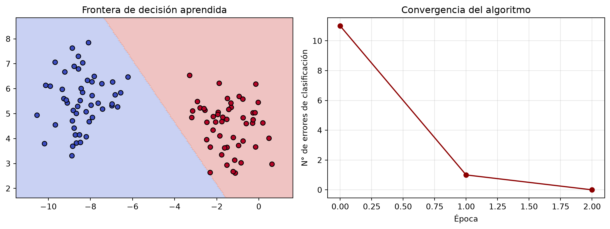

Notas de clase — Curso de Posgrado en Inteligencia Artificial en Física Médica
Author
Ignacio Scarinci
Published
August 19, 2026
1 Unidad 1 — Del aprendizaje automático clásico al Deep Learning
1.1 Presentación de la unidad
Esta primera unidad tiene como objetivo tender un puente entre los métodos estadísticos y computacionales clásicos, ampliamente utilizados en Física Médica —dosimetría, radiodiagnóstico, radioterapia y medicina nuclear— y el paradigma del Deep Learning.
La pregunta que guía la unidad es:
¿Por qué y cuándo conviene reemplazar —o complementar— un modelo clásico por uno basado en redes neuronales?
La respuesta no es que los modelos de Deep Learning sean necesariamente “mejores”. Un modelo más complejo puede ser innecesario si un modelo clásico resuelve adecuadamente el problema. La ventaja de las redes neuronales aparece especialmente cuando necesitamos aprender relaciones complejas a partir de datos de alta dimensionalidad y cuando diseñar manualmente una representación adecuada resulta difícil.
Por eso, antes de estudiar redes profundas, necesitamos entender qué pueden hacer los modelos clásicos, cuáles son sus supuestos y dónde aparecen sus limitaciones.
1.2 Objetivos de aprendizaje
Al finalizar esta unidad se espera que el estudiante pueda:
Distinguir los principales paradigmas del aprendizaje automático: supervisado, no supervisado y por refuerzo.
Comprender la diferencia entre riesgo esperado y riesgo empírico.
Explicar los conceptos de generalización, sobreajuste y dataset shift.
Reconocer los principales modelos clásicos de aprendizaje automático y sus supuestos.
Comprender matemáticamente la regresión lineal y logística.
Interpretar geométricamente un clasificador lineal.
Formalizar matemáticamente el Perceptrón.
Implementar el algoritmo de aprendizaje del Perceptrón.
Comprender por qué una única neurona no puede resolver problemas no linealmente separables como XOR.
Entender cómo la composición de múltiples neuronas conduce naturalmente al concepto de red neuronal.
Comprender por qué el Deep Learning permite aprender representaciones complejas de los datos.
Reconocer algunos de los principales hitos históricos que condujeron desde las primeras redes neuronales hasta los modelos actuales.
2 1. ¿Por qué empezar por lo clásico?
Antes de introducir las redes neuronales profundas, conviene entender los métodos que dominaron —y que siguen dominando en muchos contextos clínicos— el análisis de datos médicos.
Los modelos clásicos tienen ventajas importantes:
requieren, en muchos casos, cantidades relativamente pequeñas de datos;
pueden ser fáciles de interpretar;
permiten incorporar conocimiento experto;
suelen tener costos computacionales bajos;
pueden ser más sencillos de validar y documentar;
y, dependiendo del problema, pueden ofrecer un desempeño excelente.
En aplicaciones clínicas y de Física Médica, además, la trazabilidad y la validación tienen una importancia particular.
ImportantRegla de oro
Un modelo de Deep Learning no debería evaluarse aisladamente. Todo pipeline de Deep Learning en física médica debería compararse, cuando corresponda, con un baseline clásico apropiado y correctamente ajustado.
El baseline puede ser una regresión lineal o logística, un árbol decisiones, Random Forest, SVM, un método estadístico convencional o incluso un modelo físico o clínico utilizado habitualmente.
Si un modelo profundo no ofrece una mejora relevante respecto de una solución mucho más sencilla, su complejidad adicional puede no estar justificada.
Una idea importante que aparecerá a lo largo del curso es:
Un modelo más complejo no es necesariamente un modelo mejor.
La elección del modelo depende del problema, de los datos disponibles, de los objetivos y del costo asociado a su desarrollo, validación y utilización.
3 2. Los paradigmas del aprendizaje automático
Podemos organizar una gran parte de los métodos de aprendizaje automático según la información disponible durante el entrenamiento.
Paradigma
Información disponible
Objetivo
Supervisado
\((\mathbf{x},y)\)
Aprender a predecir \(y\)
No supervisado
\(\mathbf{x}\)
Descubrir estructura en los datos
Por refuerzo
Estados, acciones y recompensas
Aprender una estrategia de decisión
Existe además una categoría particularmente importante en los desarrollos recientes:
En este caso, las etiquetas utilizadas para entrenar el modelo se construyen automáticamente a partir de los propios datos. Esto permite aprovechar grandes cantidades de datos sin etiquetar y será especialmente importante al estudiar modelos fundacionales y modelos de lenguaje.
Donde el primer término mide el error cometido sobre los datos de entrenamiento y \(\Omega(\theta)\) representa un término de regularización.
El parámetro \(\lambda\) controla cuánto penalizamos la complejidad del modelo.
5 4. Aprendizaje no supervisado
En el aprendizaje no supervisado partimos de un conjunto de datos
\[
\mathcal{D}={\mathbf{x}_i}_{i=1}^{N},
\]
donde cada
\[
\mathbf{x}_i\in\mathbb{R}^d
\]
contiene las características observadas de un caso, pero no tenemos una variable objetivo \(y_i\) conocida.
El objetivo depende del problema. Podemos buscar, por ejemplo:
grupos de datos similares;
representaciones de menor dimensionalidad;
anomalías;
estructuras latentes;
representaciones útiles de los datos.
No existe una única función de pérdida para todos los problemas no supervisados. La función objetivo depende de qué estructura queremos aprender.
Por ejemplo, en clustering puede buscarse una partición de los datos en grupos internamente similares. En reducción de dimensionalidad puede buscarse una representación de menor dimensión que conserve la mayor cantidad posible de información relevante.
La diferencia fundamental con el aprendizaje supervisado es que:
no le indicamos al algoritmo cuál es la respuesta correcta.
El modelo debe descubrir regularidades presentes en los datos.
Por ejemplo, dado un conjunto de imágenes de tumores sin etiquetas, un algoritmo podría identificar grupos de pacientes con características radiológicas similares sin que previamente le hayamos indicado cuáles son esos grupos.
Esto introduce una cuestión fundamental:
¿Los patrones encontrados son reales y clínicamente relevantes, o son simplemente estructuras particulares de nuestra muestra?
Por eso, también en aprendizaje no supervisado es necesario evaluar la estabilidad y reproducibilidad de los resultados.
5.1 Aplicaciones
En Física Médica, el aprendizaje no supervisado puede utilizarse para:
exploración de datos;
segmentación;
reducción de dimensionalidad;
detección de anomalías;
identificación de subgrupos de pacientes;
análisis exploratorio de imágenes;
aprendizaje de representaciones.
Encontrar una estructura matemática en los datos no implica necesariamente encontrar una estructura con significado clínico.
6 5. Aprendizaje por refuerzo
En el aprendizaje por refuerzo el problema es diferente.
En lugar de aprender a partir de ejemplos \((\mathbf{x}_i,y_i)\), tenemos un agente que interactúa con un entorno.
En cada instante \(t\):
el agente observa un estado \(s_t\);
selecciona una acción \(a_t\);
recibe una recompensa \(r_t\);
el entorno evoluciona hacia un nuevo estado \(s_{t+1}\).
El parámetro \(\gamma\in[0,1]\) es el factor de descuento, que determina cuánto valoramos las recompensas futuras.
El agente aprende mediante interacción y prueba y error.
Una dificultad fundamental es el compromiso entre:
exploración: probar acciones nuevas;
explotación: utilizar acciones que sabemos que funcionan.
En Física Médica, podemos imaginar un problema de optimización de un plan de tratamiento. El estado podría describir el plan actual y sus características dosimétricas, una acción podría modificar determinados parámetros y la recompensa podría combinar la cobertura tumoral y la protección de órganos sanos.
El agente intentaría aprender una estrategia que maximice la calidad del plan.
WarningLa función de recompensa importa
Un agente de aprendizaje por refuerzo optimiza aquello que definimos como recompensa.
Si la recompensa no representa correctamente el objetivo clínico, el agente puede encontrar estrategias que optimicen matemáticamente la recompensa pero que no sean clínicamente apropiadas.
En síntesis:
El aprendizaje supervisado aprende a predecir; el no supervisado aprende a descubrir estructura; el aprendizaje por refuerzo aprende a tomar decisiones.
7 6. Modelos clásicos de aprendizaje automático
Los distintos algoritmos incorporan diferentes sesgos inductivos: supuestos sobre la estructura de los datos que hacen que determinadas soluciones sean más fáciles de aprender que otras.
Modelo
Uso típico
Ventaja
Limitación
Regresión lineal
Predicción de variables continuas
Simple e interpretable
Solo relaciones lineales
Regresión logística
Clasificación
Simple y probabilística
Frontera lineal
Árbol de decisión
Clasificación y regresión
Fácil de interpretar
Puede sobreajustar
Random Forest
Clasificación y regresión
Captura relaciones no lineales
Menor interpretabilidad
SVM
Clasificación
Eficaz en alta dimensión
Sensible a elección de kernel y escala
k-NN
Clasificación y regresión
Simple y no paramétrico
Costoso en inferencia
PCA
Reducción de dimensionalidad
Simple y eficiente
Captura estructura lineal
No existe un modelo universalmente mejor.
La pregunta correcta no es:
“¿Qué algoritmo es el mejor?”
sino:
“¿Qué modelo es adecuado para este problema y estos datos?”
8 Riesgo esperado y riesgo empírico
Este concepto es fundamental para entender el aprendizaje automático.
El riesgo empírico es nuestro estimador del riesgo esperado.
8.0.1 Una analogía
Supongamos que queremos conocer la altura promedio de todos los adultos de Argentina.
No podemos medir a toda la población. Podemos seleccionar una muestra de 1.000 personas y calcular su altura promedio.
El promedio de esas 1.000 personas es una estimación del promedio poblacional.
La calidad de esa estimación dependerá, entre otras cosas, de cómo fue seleccionada la muestra.
Lo mismo ocurre con un modelo de aprendizaje automático:
entrenamos y evaluamos sobre una muestra, pero queremos que el modelo funcione sobre una población más amplia.
8.1 Generalización y sobreajuste
Un modelo puede obtener un error extremadamente bajo sobre los datos de entrenamiento sin necesariamente generalizar bien a nuevos datos.
Esto es el sobreajuste (overfitting).
Conceptualmente:
\[
\text{bajo error de entrenamiento}
\not\Rightarrow
\text{bajo error en datos nuevos}.
\]
Un modelo puede aprender patrones genuinos de la población, pero también puede aprender características particulares de la muestra de entrenamiento que no se repiten posteriormente.
ImportantIdea central
El objetivo del aprendizaje automático no es memorizar los datos disponibles.
El objetivo es aprender regularidades que permitan realizar buenas predicciones sobre datos que todavía no hemos visto.
Esto explica por qué necesitamos separar los datos utilizados para ajustar el modelo de aquellos utilizados para evaluar su capacidad de generalización.
Una división habitual es:
training set: utilizado para ajustar los parámetros;
validation set: utilizado para seleccionar modelos e hiperparámetros;
test set: reservado para una evaluación final.
En aplicaciones médicas, esta separación debe realizarse cuidadosamente para evitar data leakage.
Por ejemplo, si tenemos múltiples imágenes del mismo paciente, no deberíamos distribuir aleatoriamente esas imágenes entre entrenamiento y test. De lo contrario, el modelo podría encontrarse durante el test con información muy relacionada con algo que ya vio durante el entrenamiento.
8.2 Generalización en Física Médica
En Física Médica, la generalización tiene una dificultad adicional.
Un modelo puede funcionar correctamente sobre nuevos pacientes del mismo centro y, sin embargo, degradar su desempeño cuando cambia:
el hospital;
el fabricante del equipo;
el modelo del tomógrafo;
el protocolo de adquisición;
la población de pacientes;
el tratamiento;
la reconstrucción de imágenes;
o las características demográficas.
Este problema se conoce genéricamente como dataset shift o domain shift.
Por lo tanto:
Generalizar no significa solamente funcionar sobre una imagen que el modelo nunca vio. También significa funcionar cuando cambian las condiciones bajo las cuales se generan los datos.
Esta cuestión será especialmente importante al estudiar Deep Learning aplicado a imágenes médicas.
9 7. Regresión lineal y logística
La regresión lineal y la regresión logística son dos modelos fundamentales de aprendizaje supervisado.
Ambos reciben un vector de características \(\mathbf{x}\) y calculan una combinación lineal:
\[
z=\mathbf{w}^{\top}\mathbf{x}+b.
\]
Aquí:
\(\mathbf{w}\) son los pesos;
\(b\) es el término independiente o bias.
El bias permite desplazar la salida del modelo independientemente de los valores de entrada.
La diferencia entre ambos modelos está en qué hacemos con esta combinación lineal y qué tipo de variable queremos predecir.
9.1 Regresión lineal
Se utiliza cuando la variable objetivo \(y\) es continua.
El modelo predice directamente:
\[
\hat y
=
\mathbf{w}^{\top}\mathbf{x}+b.
\]
Por ejemplo, podríamos utilizar características relacionadas con un haz de radiación para predecir una magnitud dosimétrica continua.
Los parámetros \(\mathbf{w}\) y \(b\) pueden ajustarse minimizando el error cuadrático medio (Mean Squared Error, MSE):
El valor 0.5 es una elección habitual, pero no necesariamente óptima en aplicaciones clínicas. El umbral puede modificarse dependiendo del costo relativo de falsos positivos y falsos negativos.
9.3 El puente hacia las redes neuronales
La regresión logística contiene una idea que volveremos a encontrar en las redes neuronales.
Primero calculamos:
\[
z=\mathbf{w}^{\top}\mathbf{x}+b,
\]
y luego aplicamos una función de activación:
\[
\hat p=\sigma(z).
\]
Podemos pensar esta operación como una unidad neuronal simple.
Las redes neuronales parten de esta idea y la extienden utilizando muchas unidades organizadas en capas. Al combinar sucesivamente estas operaciones, la red puede representar relaciones cada vez más complejas entre las variables de entrada y la salida.
Este punto será central cuando estudiemos el Perceptrón.
10 8. ¿Qué significa que un modelo sea lineal?
En un problema de clasificación binaria, un modelo lineal define una frontera de decisión mediante:
\[
\mathbf{w}^{\top}\mathbf{x}+b=0.
\]
En dos dimensiones, esta ecuación representa una recta.
En tres dimensiones representa un plano.
En dimensiones mayores hablamos de un hiperplano.
Por lo tanto, un clasificador lineal puede separar las clases únicamente mediante un hiperplano.
Esto conduce a un concepto fundamental:
Dos clases son linealmente separables si existe un hiperplano que las separe perfectamente.
La regresión logística, por ejemplo, produce una frontera de decisión lineal aunque la salida del modelo sea una probabilidad.
Esto plantea una pregunta:
¿Qué ocurre cuando los datos no pueden separarse mediante una frontera lineal?
La respuesta nos lleva directamente al Perceptrón.
10.1 Ejemplo práctico: comparación de fronteras de decisión
Figure 1: Fronteras de decisión de modelos clásicos sobre un dataset sintético (ej. dos features radiómicas)
Se puede observar cómo cada modelo impone un sesgo inductivo distinto sobre la forma de la frontera de decisión: lineal (regresión logística), suave y global (SVM-RBF), o local y fragmentada (árbol, k-NN).
11 Introducción al Deep Learning: breve historia
11.1 ¿Qué es el Deep Learning?
El Deep Learning (aprendizaje profundo) es una subfamilia del aprendizaje automático basada en redes neuronales artificiales con múltiples capas, capaces de aprender representaciones jerárquicas de los datos directamente desde datos crudos (píxeles, señales), sin necesidad de ingeniería manual de features.
Figure 2: La inteligencia artificial, el aprendizaje automático y el deep learning
Matemáticamente, un modelo profundo se puede expresar como una composición de funciones paramétricas:
donde cada \(f^{(l)}\) es una transformación (capa) con parámetros propios \(\theta^{(l)}\).
La diferencia central respecto de los modelos clásicos es que las representaciones intermedias se aprenden automáticamente a partir de los datos, en lugar de ser diseñadas a mano por un experto (lo que en machine learning clásico se llama feature engineering).
Figure 3: Machine Learning vs. Deep Learning
11.2 Línea de tiempo histórica
Figure 4: Hitos históricos de la IA
La historia del Deep Learning no fue una línea recta: tuvo dos períodos de estancamiento —los llamados “inviernos de la IA”— separados por avances puntuales, y un resurgimiento sostenido a partir de 2012 que se extiende hasta hoy. Repasamos primero esos inviernos y luego, con más detalle, la década que va de AlexNet (2012) a la actualidad.
11.3 Los “dos inviernos” de la IA neuronal
Primer invierno (post-1969): Minsky y Papert demuestran que el perceptrón simple no puede resolver problemas no linealmente separables (el caso paradigmático: la función XOR, que analizaremos en detalle más adelante). Esto reduce drásticamente el financiamiento a la investigación en redes neuronales durante casi dos décadas.
Segundo invierno (fines de los 90s-2000s): a pesar del backpropagation (1986), la falta de datos masivos y de poder de cómputo, sumada al auge de las SVMs y los métodos de ensemble, relega nuevamente a las redes neuronales.
El resurgimiento (2006-2012): la disponibilidad de GPUs, de grandes bases de datos etiquetadas (ImageNet) y de mejoras algorítmicas (ReLU, dropout, mejor inicialización) permite entrenar redes verdaderamente profundas. AlexNet (2012) es el punto de inflexión que marca el inicio de la era moderna del Deep Learning.
11.4 ImageNet y el auge de las CNNs
El ImageNet Large Scale Visual Recognition Challenge (ILSVRC) fue una competencia anual iniciada en 2010 para evaluar y comparar algoritmos de reconocimiento visual a gran escala, sobre un subconjunto de ImageNet de aproximadamente 1.000 clases. Se convirtió en el benchmark de referencia para medir el progreso en clasificación de imágenes, y su evolución durante la década de 2010 resume, en una sola tabla, la revolución de las CNNs:
2010: el modelo ganador, basado en SVM y características tradicionales (HoG, LBP), obtuvo 71,8% de top-5 accuracy (28,2% de error).
2011: otro modelo basado en SVM con Fisher Vectors alcanzó 74,2% de accuracy (25,0% de error).
2012:AlexNet, una CNN profunda, produjo un salto abrupto: 84,7% de accuracy (≈15,3% de error) — casi 10 puntos de mejora respecto del año anterior.
2013: las CNNs se consolidan como la estrategia dominante; los modelos siguientes superan el 90% de accuracy.
2014: arquitecturas como GoogLeNet y VGGNet llevan el desempeño a 93-94% de accuracy.
2015:ResNet alcanza 96,4% de accuracy (≈3,6% de error), superando por primera vez el desempeño humano estimado en esta tarea.
2016: CUImage, un ensemble de seis redes, roza el 3% de error.
2017:SENet alcanza el mejor resultado de la competencia: 97,75% de accuracy (2,25% de error). Los organizadores consideran el benchmark esencialmente resuelto y anuncian el final de la competencia.
En síntesis: entre 2010 y 2017 el error top-5 cayó de 28,2% a 2,25%. El salto más importante ocurrió en 2012 con AlexNet, y marca el comienzo de la expansión acelerada del deep learning en visión por computadora — el mismo AlexNet que abre la línea de tiempo que sigue a continuación.
Metrica top-5 accuracy
11.5 Los últimos años: modelos fundacionales y la IA generativa
Desde AlexNet en 2012, el ritmo de avances no hizo más que acelerarse. A continuación repasamos, año a año, los hitos que llevaron del “renacimiento” del deep learning en visión por computadora a los modelos fundacionales y agénticos actuales, con aplicaciones clínicas cada vez más concretas en diagnóstico asistido, segmentación automática y predicción de resultados.
Figure 5: Hitos recientes de la IA
11.5.1 2013 — AlexNet y los Autoencoders Variacionales
2013 es considerado el año de “mayoría de edad” del deep learning, consolidando el impacto de AlexNet un año antes. En paralelo surgen los VAEs (Autoencoders Variacionales), modelos generativos que aprenden una representación comprimida (espacio latente) de los datos para luego generar nuevas muestras, abriendo camino a aplicaciones en arte, diseño y videojuegos.
Ian Goodfellow presenta las GANs: dos redes —generadora y discriminadora— entrenadas en un esquema competitivo, donde una intenta crear datos sintéticos convincentes y la otra intenta detectarlos. Se convirtieron rápidamente en una herramienta central para generar imágenes, video, música y arte, e impulsaron el aprendizaje no supervisado —hasta entonces un área poco desarrollada— al demostrar que era posible producir datos de alta calidad sin depender de etiquetas.
11.5.3 2015 — ResNets y avances en NLP
Kaiming He introduce las ResNets, redes con conexiones residuales que “saltean” capas para resolver el desvanecimiento del gradiente, permitiendo entrenar redes mucho más profundas de lo que se creía posible (visto en la tabla de ImageNet más arriba). En paralelo, las RNNs y LSTMs —existentes desde los años 90— empiezan a rendir gracias a más datos, más cómputo y mejores mecanismos de gating, mejorando traducción automática, generación de texto y análisis de sentimiento: las bases de los LLMs actuales.
11.5.4 2016 — AlphaGo
AlphaGo, de DeepMind, derrota al campeón mundial de Go Lee Sedol, casi dos décadas después de la caída de Kasparov ante Deep Blue en ajedrez. Combinando aprendizaje por refuerzo profundo con búsqueda Monte Carlo Tree Search, el sistema evaluó millones de posiciones para tomar decisiones que superaron la intuición humana en un juego considerado, hasta entonces, demasiado complejo para las máquinas.
11.5.5 2017 — Arquitectura Transformer
El año más determinante de la década. Vaswani y colegas publican “Attention Is All You Need”, introduciendo la arquitectura Transformer, basada en auto-atención: en vez de procesar palabras en orden fijo, examina toda la secuencia en simultáneo, asignando puntajes de relevancia entre palabras. El diseño encoder-decoder resuelve el problema de las dependencias de largo alcance que limitaba a las RNNs, y se convierte en el componente base de todo el desarrollo posterior en NLP y, más adelante, en visión (Unidad siguiente).
11.5.6 2018 — GPT-1, BERT y Graph Neural Networks
OpenAI lanza GPT-1, demostrando la efectividad de pre-entrenar de forma no supervisada y luego hacer fine-tuning en tareas específicas. Meses después, Google presenta BERT, que representa el contexto de cada palabra en ambas direcciones simultáneamente (no solo hacia adelante, como GPT-1), superando el estado del arte en múltiples benchmarks de NLP. Ese mismo año, las Graph Neural Networks (GNNs) ganan tracción aplicando message-passing sobre datos en forma de grafo, con avances en redes sociales, sistemas de recomendación y descubrimiento de fármacos.
11.5.7 2019 — GPT-2 y modelos generativos mejorados
GPT-2 alcanza desempeño de estado del arte en múltiples tareas de NLP y genera texto notablemente coherente, anticipando lo que vendría en los años siguientes. En generación de imágenes, BigGAN (DeepMind) y StyleGAN (NVIDIA) elevan drásticamente la calidad y el control sobre las imágenes sintéticas.
11.5.8 2020 — GPT-3 y aprendizaje auto-supervisado
GPT-3 representa un salto de escala mayúsculo: de 117 millones de parámetros (GPT-1) a 1.500 millones (GPT-2) y 175.000 millones en GPT-3. Esto le permite generar texto coherente en una enorme variedad de tareas —completado, preguntas y respuestas, escritura creativa— sin fine-tuning específico, poniendo de relieve el valor del aprendizaje auto-supervisado: entrenar sobre grandes volúmenes de datos no etiquetados logra una comprensión amplia del lenguaje de forma mucho más económica que el entrenamiento supervisado tradicional.
11.5.9 2021 — AlphaFold 2, DALL·E y GitHub Copilot
AlphaFold 2 (DeepMind) resuelve el problema del plegado de proteínas extendiendo la arquitectura Transformer, prediciendo la estructura 3D de una proteína a partir de su secuencia de aminoácidos — con enorme potencial para el descubrimiento de fármacos y la biología estructural. DALL·E (OpenAI) combina modelos de lenguaje estilo GPT con generación de imágenes a partir de texto, mientras que GitHub Copilot (con el modelo Codex) lleva la asistencia de IA a la programación cotidiana.
11.5.10 2022 — ChatGPT y Stable Diffusion
ChatGPT (OpenAI, noviembre) lleva los LLMs al público masivo: conversación fluida, explicaciones, código, distintos estilos de escritura, todo desde una interfaz simple. Su adopción cruza rápidamente del ámbito técnico a prácticamente todas las profesiones. En paralelo, Stable Diffusion (Stability AI) genera imágenes fotorrealistas desde texto operando en un espacio latente de menor dimensión. Juntos, disparan una ola masiva de inversión en IA generativa multimodal.
11.5.11 2023 — LLMs y bots por todas partes
Cadencia vertiginosa de lanzamientos: LLaMA (Meta, febrero) supera a GPT-3 con muchos menos parámetros; GPT-4 (OpenAI, marzo) llega multimodal y con capacidades muy superiores; Alpaca (Stanford) y Bard/PaLM-2 (Google) completan un panorama de competencia intensa entre laboratorios, mientras la adopción empresarial se acelera (Duolingo Max, Slack GPT, Shopify, Bing con GPT-4).
11.5.12 2024 — La era del razonamiento y la multimodalidad nativa
OpenAI lanza o1 (septiembre), el primer modelo de “razonamiento”: entrenado con RL a gran escala para pensar paso a paso antes de responder, con saltos notables en matemática y programación. GPT-4o aporta multimodalidad nativa (texto, imagen y audio en un solo modelo), y OpenAI muestra Sora, capaz de generar video fotorrealista desde texto. Google presenta Gemini y Meta libera Llama 3. En el plano regulatorio, la Unión Europea promulga la AI Act, primer marco normativo integral del mundo para IA.
11.5.13 2025 — Razonamiento abierto y el ascenso de los agentes
DeepSeek-R1 (enero) iguala el desempeño de o1 con una fracción del costo de entrenamiento, consolidando a China como competidor de primer nivel en modelos abiertos. OpenAI responde con o3, y los laboratorios grandes (Google, Anthropic, Meta, Alibaba) lanzan sus propias familias de modelos de razonamiento. El foco se desplaza de “modelos que responden” a agentes que actúan: Claude 4/4.5 y herramientas como Claude Code o Cursor permiten delegar tareas de programación completas. Google presenta Gemini 3, primer modelo en superar 1500 Elo en LMArena.
11.5.14 2026 — El ascenso de China
China se posiciona como líder global en investigación y desarrollo de IA, con avances importantes en modelos de lenguaje, visión por computadora y sistemas de razonamiento. La inversión estatal y el ecosistema empresarial local aceleran la innovación, consolidando al país como un actor central en la evolución de la inteligencia artificial. Kimi K3, un modelo de pesos abiertos desarrollado por Moonshot AI con cerca de 3 billones de parámetros (arquitectura mixture-of-experts), se posiciona al mismo nivel que GPT-5 o Gemini 3 en varios benchmarks — un nuevo capítulo en la democratización de la inteligencia artificial.
11.6 ¿Por qué “profundo” y por qué ahora es relevante en Física Médica?
Datos: las imágenes médicas (CT, RM, PET, mamografía) son datos de alta dimensionalidad donde el Deep Learning —en particular las CNNs— sobresale.
Cómputo: las GPUs/TPUs permiten entrenar modelos con millones de parámetros en tiempos razonables.
Representaciones jerárquicas: en imágenes médicas, las capas iniciales aprenden bordes y texturas; las capas intermedias, estructuras anatómicas; las capas profundas, patrones patológicos complejos (una analogía directa con la vía visual biológica).
TipAplicaciones actuales en Física Médica
Segmentación automática de órganos en riesgo (OARs) y tumores
Reducción de dosis en CT mediante denoising con redes profundas
Reconstrucción de imágenes PET/RM aceleradas
Detección asistida de nódulos, lesiones y contornos tumorales
Control de calidad automatizado y predicción de outcomes clínicos
12 Redes neuronales simples: el algoritmo del Perceptrón
12.1 La neurona biológica como inspiración
McCulloch y Pitts (1943) propusieron un modelo matemático simplificado de la neurona: recibe señales de entrada, las pondera y produce una salida binaria si supera un umbral. Con ese modelo mostraron que una red de neuronas simples podía implementar cualquier función lógica booleana. Rosenblatt (1958) retomó esa idea y la convirtió en un algoritmo de aprendizaje capaz de ajustar los pesos automáticamente a partir de ejemplos: el Perceptrón.
12.2 Definición formal
Dado un vector de entrada \(\mathbf{x} = (x_1, x_2, \dots, x_d) \in \mathbb{R}^d\), el perceptrón calcula:
\[
z = \sum_{j=1}^{d} w_j x_j + b = \mathbf{w}^\top \mathbf{x} + b
\]
donde \(\phi\) es la función de activación escalón (Heaviside), \(\mathbf{w}\) es el vector de pesos sinápticos y \(b\) el sesgo (bias).
Geométricamente, el perceptrón define un hiperplano separador en \(\mathbb{R}^d\): \(\mathbf{w}^\top \mathbf{x} + b = 0\). Todo lo que quede de un lado del hiperplano se clasifica como \(+1\); todo lo que quede del otro lado, como \(-1\) (o \(0\)). Esta lectura geométrica es la clave para entender, en la próxima sección, qué puede y qué no puede aprender un único perceptrón.
12.3 El algoritmo de aprendizaje del Perceptrón
Dado un conjunto de entrenamiento \(\{(\mathbf{x}_i, y_i)\}_{i=1}^N\) con \(y_i \in \{-1, +1\}\), el algoritmo actualiza los pesos solo cuando comete un error:
Si \(\hat{y}_i \neq y_i\): \[
\mathbf{w} \leftarrow \mathbf{w} + \eta \, y_i \, \mathbf{x}_i, \qquad b \leftarrow b + \eta \, y_i
\]
donde \(\eta > 0\) es la tasa de aprendizaje (learning rate).
ImportantTeorema de convergencia del Perceptrón
Si los datos son linealmente separables, el algoritmo del perceptrón converge en un número finito de pasos a una solución que clasifica correctamente todo el conjunto de entrenamiento (Novikoff, 1962). Si los datos no son linealmente separables, el algoritmo nunca converge y oscila indefinidamente. La siguiente sección muestra ambos casos en la práctica.
12.5 Ejemplo: separación de dos clases sintéticas (linealmente separables)
Code
import matplotlib.pyplot as pltfrom sklearn.datasets import make_blobsX, y = make_blobs(n_samples=100, centers=2, cluster_std=1.0, random_state=7)y = np.where(y ==0, -1, 1)modelo = Perceptron(lr=0.1, n_epochs=30).fit(X, y)fig, axes = plt.subplots(1, 2, figsize=(11, 4.2))# Frontera de decisiónxx, yy = np.meshgrid(np.linspace(X[:,0].min()-1, X[:,0].max()+1, 200), np.linspace(X[:,1].min()-1, X[:,1].max()+1, 200))Z = modelo.predict(np.c_[xx.ravel(), yy.ravel()]).reshape(xx.shape)axes[0].contourf(xx, yy, Z, alpha=0.3, cmap="coolwarm")axes[0].scatter(X[:,0], X[:,1], c=y, cmap="coolwarm", edgecolor="k")axes[0].set_title("Frontera de decisión aprendida")# Curva de convergenciaaxes[1].plot(modelo.errores_por_epoca, marker="o", color="darkred")axes[1].set_xlabel("Época")axes[1].set_ylabel("N° de errores de clasificación")axes[1].set_title("Convergencia del algoritmo")axes[1].grid(alpha=0.3)plt.tight_layout()plt.show()

Figure 6: Convergencia del Perceptrón sobre datos linealmente separables
12.6 De funciones lógicas simples a XOR: qué separa un perceptrón y qué no
Antes de llegar al límite del perceptrón conviene ver, en detalle, en qué tipo de problemas sí funciona — y por qué. La forma más simple de probar un clasificador binario con dos entradas es pedirle que aprenda una función lógica booleana: AND, OR, NAND, NOR y, finalmente, XOR. Todas ellas toman dos entradas \(x_1, x_2 \in \{0,1\}\) y devuelven una salida binaria, y todas caben en un plano de dos dimensiones — lo que las vuelve ideales para visualizar qué significa “ser linealmente separable”.
12.6.1 AND, OR, NAND, NOR: linealmente separables
Las siguientes tablas de verdad definen las funciones AND, OR, NAND y NOR:
\(x_1\)
\(x_2\)
AND
OR
NAND
NOR
0
0
0
0
1
1
0
1
0
1
1
0
1
0
0
1
1
0
1
1
1
1
0
0
Para cada una de estas funciones existe un hiperplano (en este caso, una recta en \(\mathbb{R}^2\)) que separa perfectamente los puntos de salida \(1\) de los de salida \(0\). Basta con encontrar \(w_1, w_2, b\) adecuados. Algunos ejemplos que un perceptrón puede encontrar (no son los únicos posibles):
AND:\(w_1 = w_2 = 1\), \(b = -1.5\) → solo \((1,1)\) supera el umbral de \(z \geq 0\).
OR:\(w_1 = w_2 = 1\), \(b = -0.5\) → cualquier entrada con al menos un \(1\) supera el umbral.
NAND (NOT AND): \(w_1 = w_2 = -1\), \(b = 1.5\) → el negado exacto de AND.
NOR (NOT OR): \(w_1 = w_2 = -1\), \(b = 0.5\) → el negado exacto de OR.
El siguiente código entrena un perceptrón real —el mismo implementado más arriba— sobre cada una de estas funciones, y confirma que converge sin errores en las cuatro:
Figure 7: El perceptrón simple aprende AND, OR, NAND y NOR: todas son linealmente separables
En los cuatro casos aparece una recta que separa limpiamente ambas clases, y el algoritmo converge en pocas épocas — tal como predice el teorema de Novikoff.
12.6.2 El límite fundamental: el problema XOR
La función XOR (OR exclusivo) es la excepción:
\(x_1\)
\(x_2\)
XOR
0
0
0
0
1
1
1
0
1
1
1
0
A diferencia de AND/OR/NAND/NOR, aquí las dos clases están entrelazadas geométricamente: los puntos \((0,0)\) y \((1,1)\) pertenecen a una clase, mientras que \((0,1)\) y \((1,0)\) —sus “vecinos” más cercanos en el plano— pertenecen a la otra. No existe ninguna recta capaz de dejar a \((0,0)\) y \((1,1)\) de un lado y a \((0,1)\) y \((1,0)\) del otro: cualquier línea que separe correctamente dos de los cuatro puntos, deja mal clasificado a algún tercero.
Figure 8: El perceptrón simple no puede separar el problema XOR (no linealmente separable)
A diferencia de las compuertas anteriores, aquí el número de errores nunca llega a cero: el algoritmo sigue “empujando” la recta de un lado a otro sin encontrar jamás una posición que satisfaga a los cuatro puntos simultáneamente. Este resultado —señalado críticamente por Minsky y Papert en 1969— es precisamente lo que causó el primer “invierno de la IA”.
12.6.3 La solución: combinar perceptrones
La salida de XOR se puede reescribir en términos de las compuertas que sí sabemos resolver:
Es decir: XOR es verdadero cuando al menos una entrada es 1 (OR) y, al mismo tiempo, no son ambas 1 (NAND). Verifiquen en la tabla de verdad que esta combinación reproduce exactamente la columna de XOR.
\(x_1\)
\(x_2\)
OR
NAND
OR \(\land\) NAND
0
0
0
1
0
0
1
1
1
1
1
0
1
1
1
1
1
1
0
0
Esto sugiere la solución estructural: si un perceptrón calcula OR, otro calcula NAND, y un tercer perceptrón combina esas dos salidas con un AND, el sistema completo resuelve XOR — aunque ninguna de sus piezas individuales pueda hacerlo por sí sola.
Esta arquitectura de tres perceptrones —dos en una “capa oculta” y uno de salida— es, ni más ni menos, el Perceptrón Multicapa (MLP) en su forma más pequeña posible. La solución existía conceptualmente desde los años 60, pero faltaba un ingrediente clave: un algoritmo que aprendiera automáticamente los pesos de cada perceptrón en lugar de tener que diseñarlos a mano combinando compuertas conocidas. Ese ingrediente —el algoritmo de backpropagation (1986)— es el que retomaremos en la luego para entrenar redes multicapa de punta a punta.
12.7 Perceptrón vs. Regresión Logística: el puente conceptual
Aspecto
Perceptrón
Regresión Logística
Activación
Escalón (Heaviside)
Sigmoide
Salida
Binaria dura \(\{-1,+1\}\)
Probabilidad continua \([0,1]\)
Función de pérdida
Implícita (regla de error)
Entropía cruzada (log-loss)
Optimización
Regla de actualización simple
Descenso por gradiente
Frontera de decisión
Lineal
Lineal
Interpretación probabilística
No
Sí
Este puente es clave: reemplazar la función escalón por una sigmoide y usar descenso por gradiente en lugar de la regla del perceptrón nos lleva directamente a la neurona artificial moderna, el bloque de construcción de todas las redes profundas que estudiaremos en las próximas unidades. Y, como acabamos de ver con XOR, apilar varias de esas neuronas en capas es lo que le da a una red la capacidad de aprender fronteras no lineales.
13 Bibliografía de la unidad
Goodfellow, I., Bengio, Y., & Courville, A. (2016). Deep Learning. MIT Press. (Cap. 1, 4, 6, 8 y 9)
Bishop, C. M. (2006). Pattern Recognition and Machine Learning. Springer.
McCulloch, W. S., & Pitts, W. (1943). A logical calculus of the ideas immanent in nervous activity. Bulletin of Mathematical Biophysics.
Rosenblatt, F. (1958). The Perceptron: A Probabilistic Model for Information Storage and Organization in the Brain. Psychological Review, 65(6), 386–408.
Minsky, M., & Papert, S. (1969). Perceptrons: An Introduction to Computational Geometry. MIT Press.
Kingma, D. P., & Ba, J. (2015). Adam: A Method for Stochastic Optimization. ICLR.
Ruder, S. (2016). An overview of gradient descent optimization algorithms. arXiv:1609.04747.
Ronneberger, O., Fischer, P., & Brox, T. (2015). U-Net: Convolutional Networks for Biomedical Image Segmentation. MICCAI.
Vaswani, A. et al. (2017). Attention Is All You Need. NeurIPS.
Dosovitskiy, A. et al. (2020). An Image is Worth 16x16 Words: Transformers for Image Recognition at Scale. arXiv:2010.11929.
Kaplan, J. et al. (2020). Scaling Laws for Neural Language Models. arXiv:2001.08361.
Brown, T. et al. (2020). Language Models are Few-Shot Learners (GPT-3). NeurIPS.
Yang, Q., Zhang, Y., Dai, W., & Pan, S. J. (2020). Transfer Learning. Cambridge University Press.
El Naqa, I., Li, R., & Murphy, M. J. (Eds.). (2015). Machine Learning in Radiation Oncology. Springer.
Waseem, M. T. A Decade of AI in Review. LinkedIn Pulse.
Footnotes
Las features radiómicas son medidas cuantitativas extraídas de imágenes médicas (CT, MRI, PET) que describen la textura, forma y estadística de regiones de interés. Son ampliamente usadas en oncología para caracterizar tumores y predecir respuesta a tratamientos.↩︎